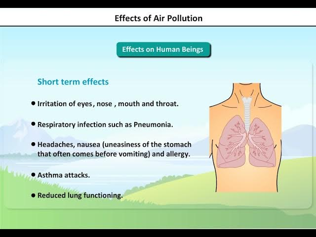
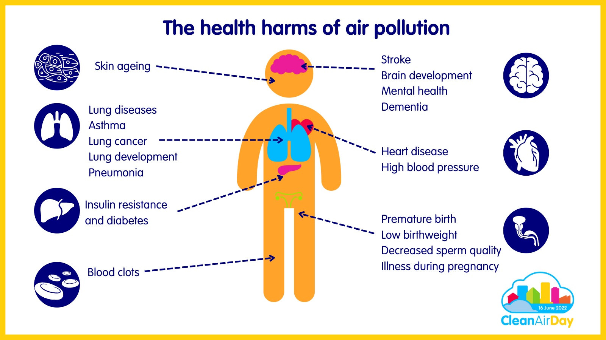

Pollution has many bad effects on both humans and nature. Breathing dirty air can cause problems like asthma, coughing, and other breathing issues. Water pollution harms fish and other animals, making rivers and oceans unsafe for both animals and people. It can also spread diseases. Soil pollution makes it harder for plants to grow, which affects food production. Noise pollution from loud sounds like traffic or factories can cause stress and even damage hearing. Pollution also harms animals and plants, killing them or making it hard for them to survive. As pollution increases, the Earth’s climate changes, causing extreme weather like heatwaves and floods. All of this makes our environment less healthy and harder to live in. Pollution affects the air we breathe, the water we drink, and the land where we live. It’s important to reduce pollution to protect our planet and health.
 Pollution harms both the planet and the people living on it. Dirty air can make it hard to breathe, leading to health problems like coughing or asthma. Polluted water can harm fish, plants, and even humans who drink it. It can also make swimming or fishing dangerous. When the soil is polluted, it becomes harder for plants to grow, which can reduce food supplies. Too much noise from traffic and factories can cause stress, sleep problems, and even hearing loss. Pollution also hurts animals and plants, making it harder for them to live and survive. In the long run, pollution causes changes in the weather and increases natural disaster